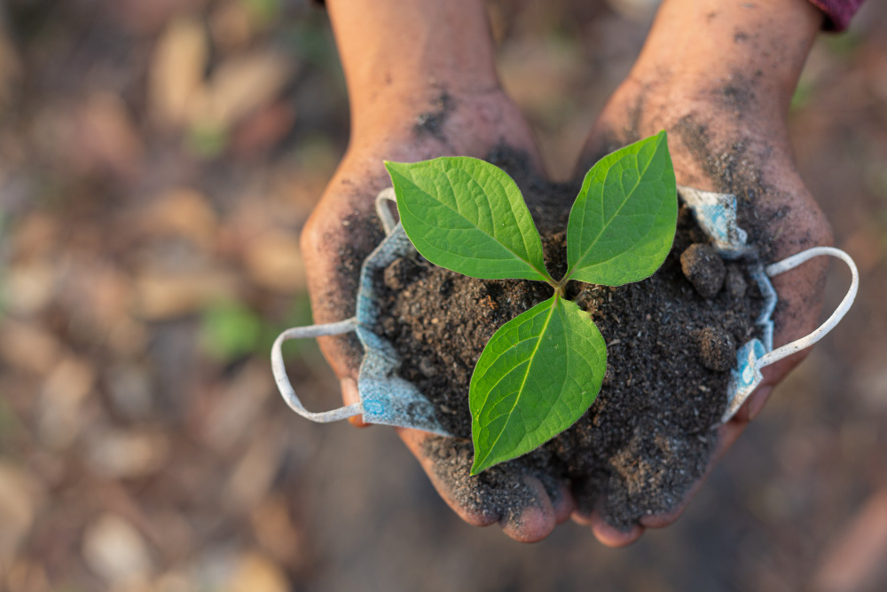
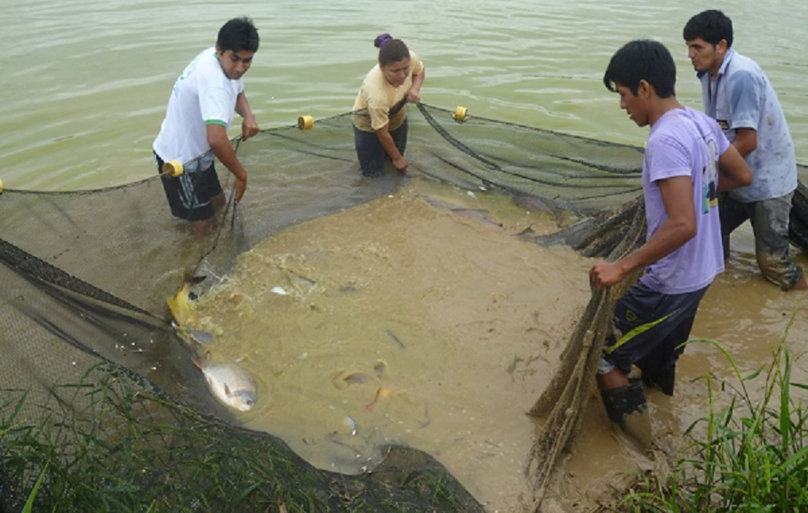
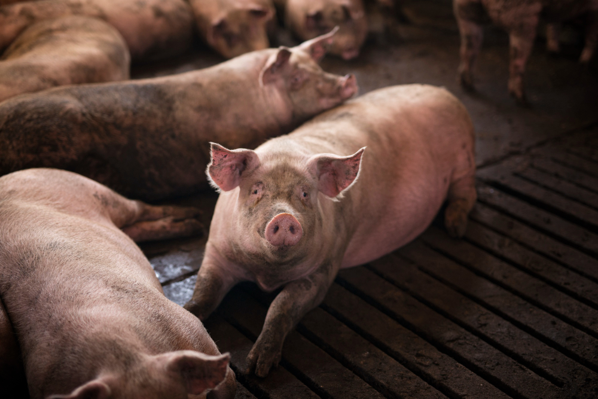
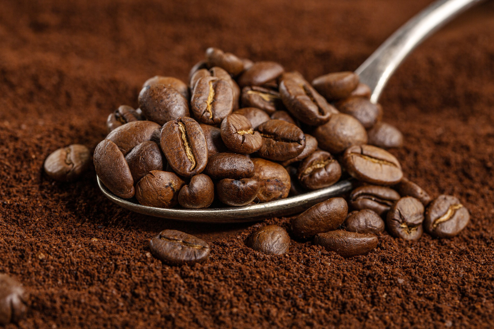
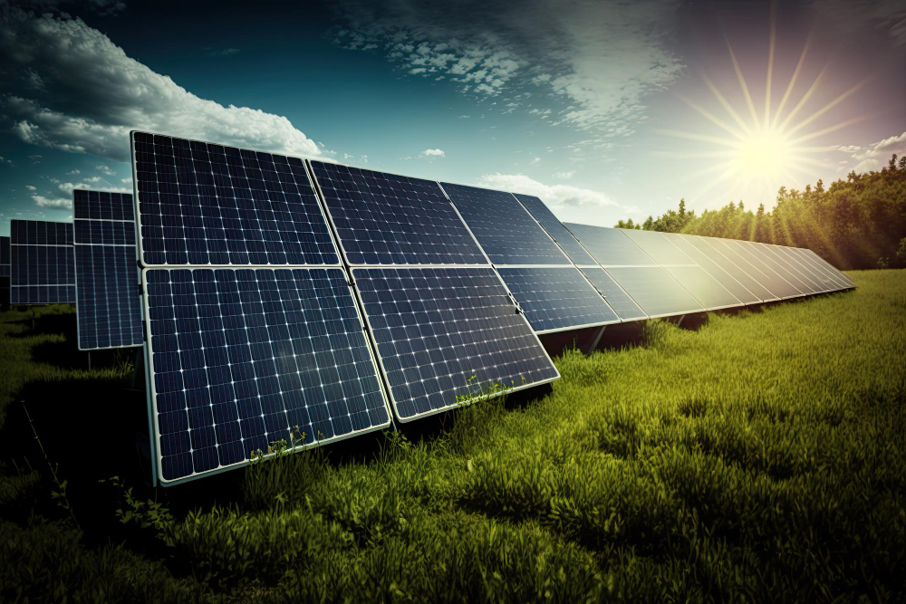
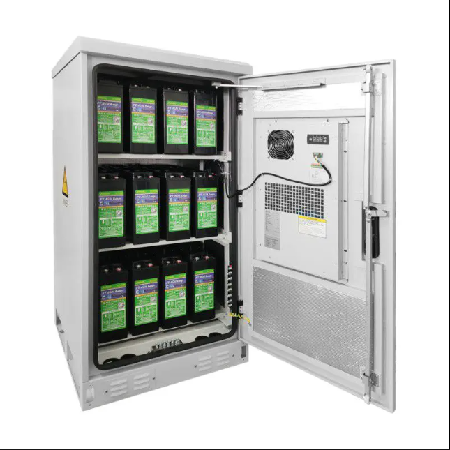
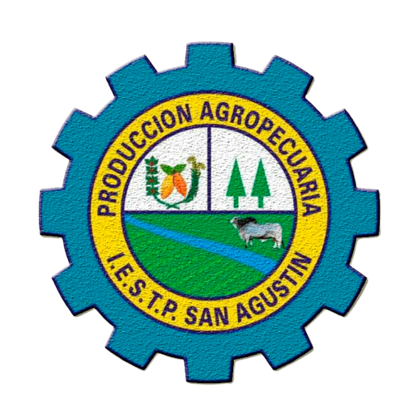

TEMARIO
-
Tecnología para una agricultura orgánica
-
Uso de energía solar fotovoltaica
-
Producción avícola desde incubadoras
-
Elaboración de alimento balamceado para animales
-
Crianza de porcinos para una diversificación productiva
-
Piscicultura tecnificada para mejorar ingresos económicos
9 y 10 noviembre
Local :IESTP SAN AGUSTÍN
Arana Vidal N° 510 - Jaén
Inscripciones
Telef. 976544419-943878835-931877133
950625469-966668330-9900030599
www.isanagustin.edu.pe/congreso
COSTOS:Estudiantes s/ 120.00
Particulares: s/ 150.00